PlacePath: Designing a placement management platform from the ground up
Impact at a glanceEstablished the approved MVP journeys, responsive UI foundation and engineering handoff for a new platform connecting placement teams, employers and students. This describes design delivery, not a measured post-launch outcome.
Turning fragmented user requirements into a connected, development-ready product experience.
As Lead Product Design Consultant, I led the end-to-end design of PlacePath, a new placement management platform serving education providers, employers and students. Starting with user stories rather than an existing product, I translated requirements into connected user journeys, established the product structure, prioritised ten essential MVP capabilities with the CEO, and designed responsive experiences across desktop, tablet and mobile. My work established the core journeys, interaction patterns and UI foundation approved by the client and handed to engineering for development.
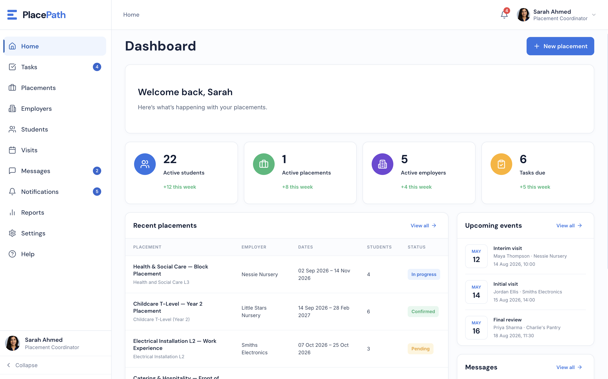
- Role
- Lead Product Design Consultant
- Users
- Placement teams, employers and students
- Product scope
- New responsive placement management product
- Ownership
- Product definition, journeys, wireframes, UI and handoff
01 — Understanding the problem
PlacePath was intended to bring placement coordination into one connected product for placement teams, employers and students. The CEO supplied product-owner research containing 15 high-level user stories, but there was no agreed MVP, product architecture or connected set of journeys.
Rather than translate each story directly into a screen, I needed to understand how the requirements related to the core task: creating and managing a placement.
My proposed approach
Recommend broader discovery
In my original proposal to the CEO, I recommended user interviews, focus groups and card sorting, followed by journeys, personas and iterative prototype testing.
The client opted to use interview research it already had. I worked with that evidence rather than implying the additional research had taken place.
The evidence available
Look beyond the feature list
One account in the supplied research described the pressure of coordinating placements for thousands of students with a very small administrative team.
That brought a sharper need into focus: reducing coordination effort, not simply digitising existing paperwork.
02 — Defining the product strategy and MVP
I worked through the existing research and stories with the CEO, separating essential user needs from functionality that would be useful later. My prioritisation question was simple: what must someone be able to do for the core placement journey to work?
That meant identifying dependencies between tasks — such as finding an employer, recording contact details, creating a placement and communicating progress — and preserving a coherent first release rather than treating every story as a feature request.
How I shaped the MVP
High-level user stories
Product-owner research and requirements supplied by the CEO
Map the core placement journey
Identify tasks, overlap, information dependencies and what makes a placement possible
Essential for the MVP
Must have
- Sign-in and role-specific access
- Placement planning and employer information
- Contacts, offers and communication
- Visits, notifications and supporting workflows
Defer until later
Nice to have
- Dashboard-style analytics
- Additional assessment and review forms
- Dedicated results and career-plan features
Align on scope with the CEO
Agree what to build now, what to defer and why
Core MVP capabilities
A focused, connected first-release scope for design and development
The product decision
Prioritise the essential placement journey, not the largest feature list. Working with the CEO, I reduced the wider set of requirements to ten core capabilities, with lower-priority features deferred so the product could remain focused and extensible.
03 — Designing the end-to-end experience
Once the MVP was agreed, I needed to turn a set of separate requirements into an experience people could navigate. I worked from the overall journey to the individual interaction: first defining how tasks connected, then exploring layouts and finally developing detailed screens.
One product, three different perspectives
The central design challenge was connecting everyone involved in a placement without making every role navigate the same tasks. I approached the product as a shared placement journey with role-specific access and relevant actions, rather than three disconnected products.
Coordinate placement planning, employer information, communication and visits.
Access the relevant placement information and communication for their involvement.
Access the placement information and actions relevant to their own journey.
Connect the journey before designing screens
I independently mapped the user flows and information architecture across placement planning, employer records, communication and visits. This provided a structure for moving between related tasks rather than designing each user story as an isolated feature.

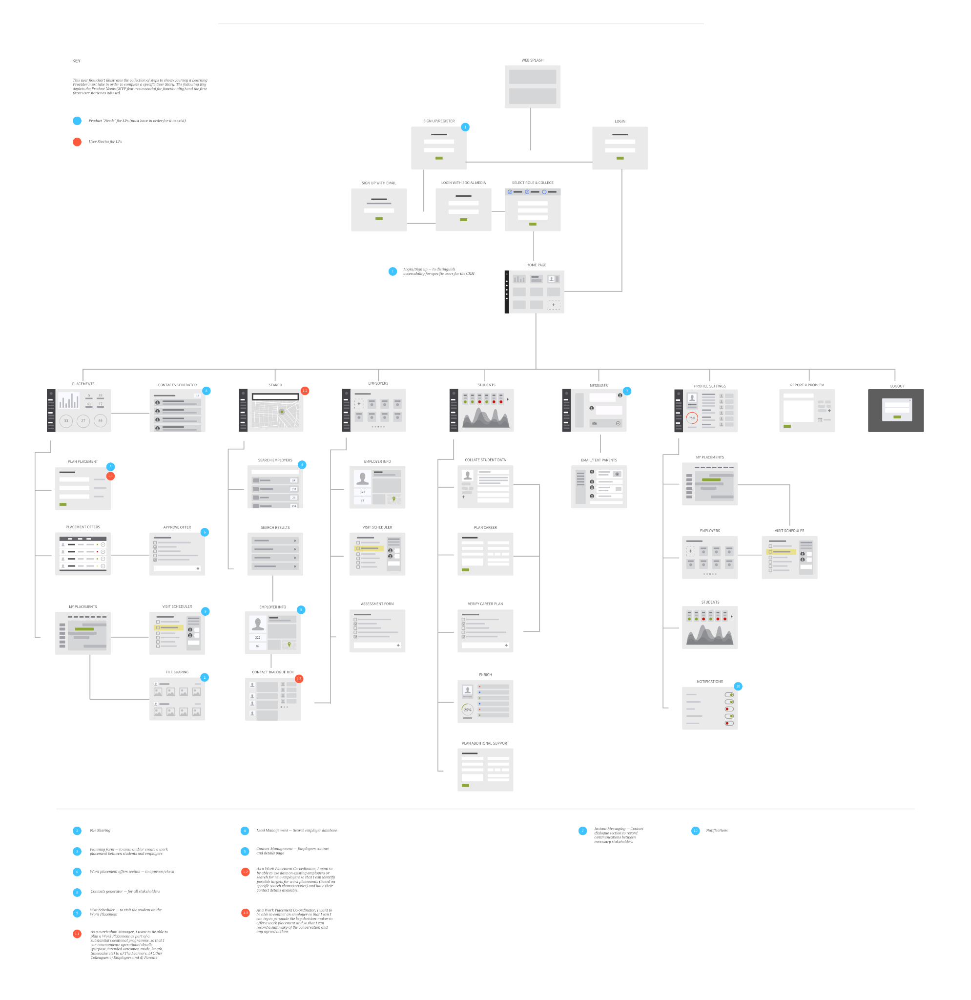
Keep planning, employers and communication in a coherent placement journey.
Give records and actions a predictable place within the product structure.
Organise the first release without making deferred capabilities the centre of the experience.
Explore navigation, search and employer workflows
I sketched the experience at low fidelity so I could work through content hierarchy, discovery and task-level interactions before committing to visual detail. The sequence below moves from the home experience to finding and contacting an employer.

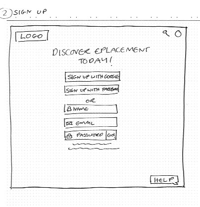

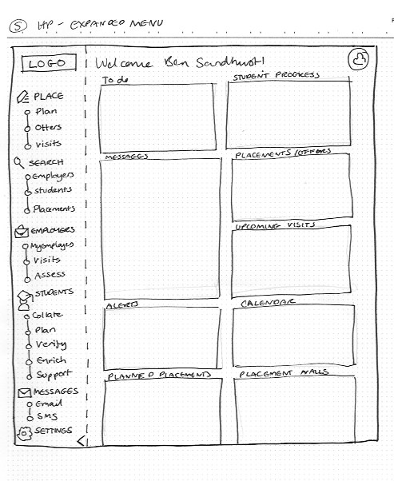

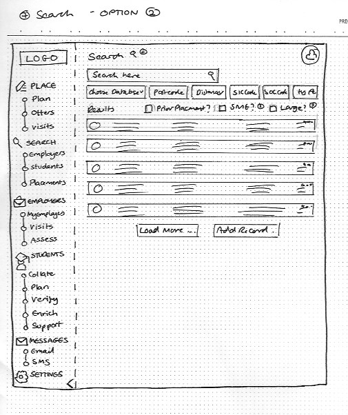

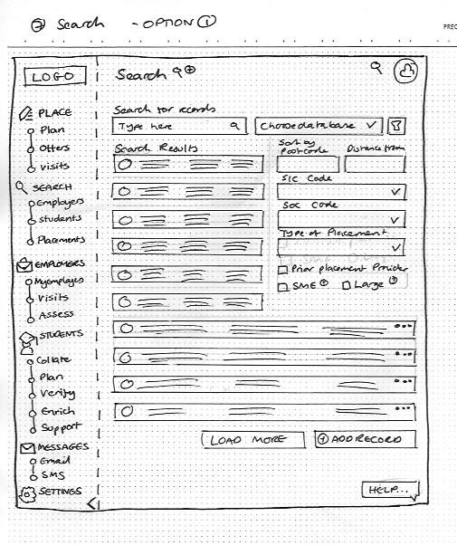

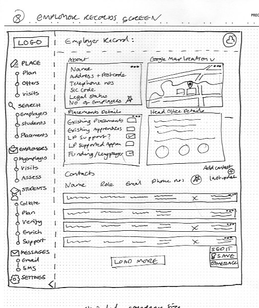

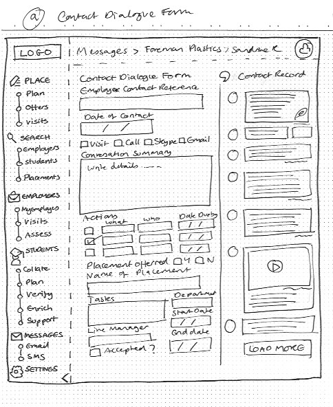
Selected original sketches in journey order. Select any image to enlarge it without leaving the page.
Refining the experience
Moving from paper to mid-fidelity, I worked through the interaction rules behind the screens: how placement staff would navigate, find employer information and build a placement plan. Three design decisions connect the work.
01 — Give placement staff control of their workspace
I explored a sidebar that could switch between condensed icons and expanded labels, leaving more space for work. Dashboard widgets were conceived as rearrangeable shortcuts for prioritising daily tasks, with an empty state to guide first-time setup.

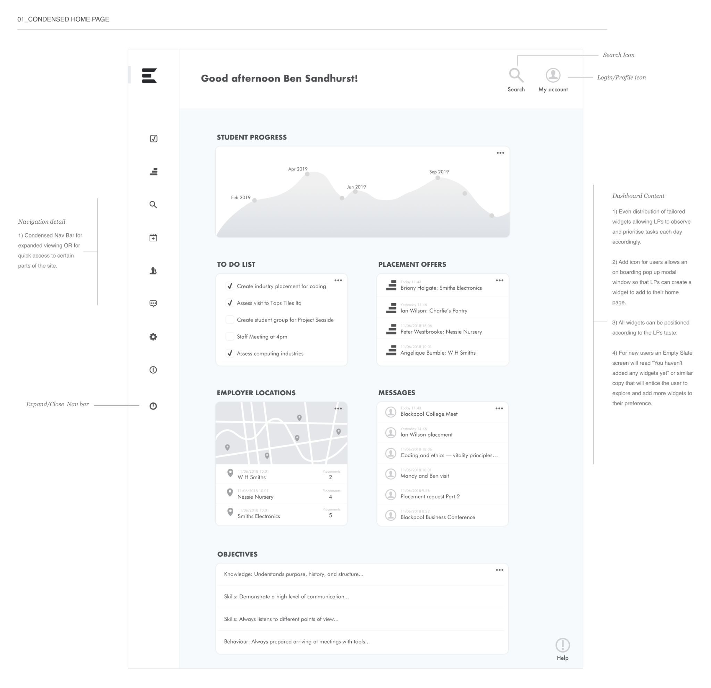
Original mid-fidelity notes: condensed home · expanded home
02 — Connect finding an employer with taking action
Search was conceived as more than a results list. I specified layered filters, sorting and direct actions, then structured employer records into editable groups for company details, placement information and contacts. Contact history could be opened from the same workflow, with permissions determining editing access.

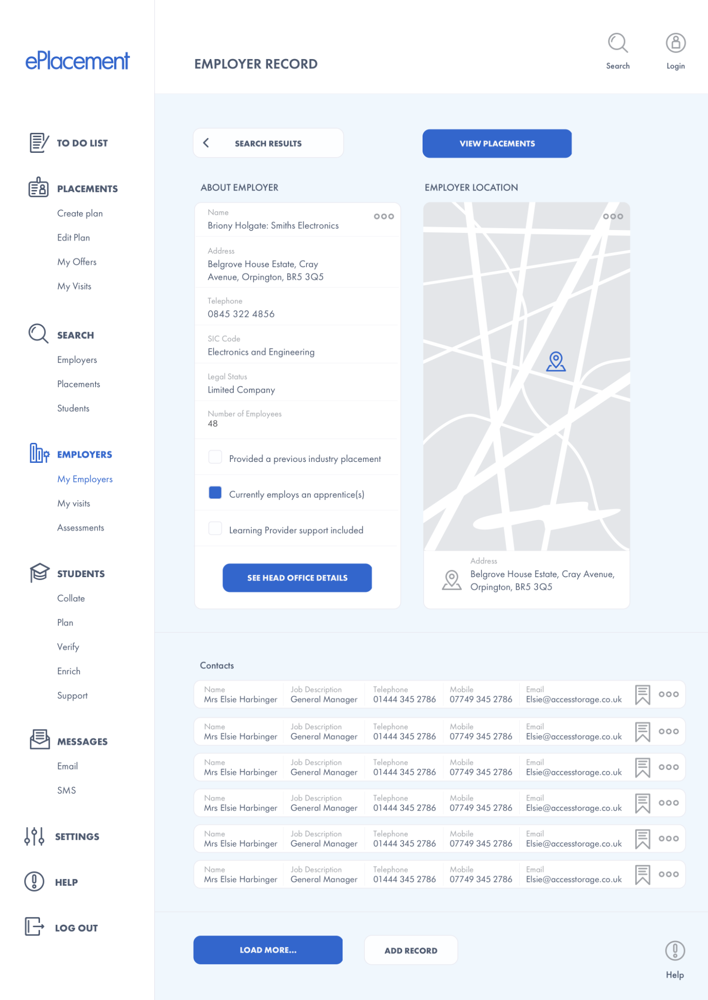

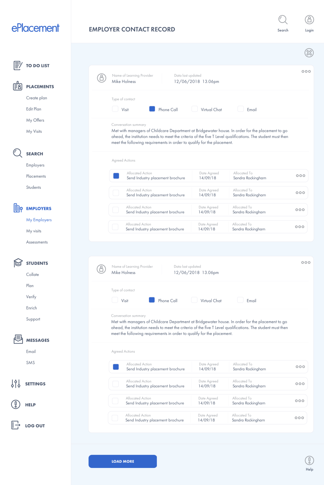
Original mid-fidelity notes: search · employer records · contact dialogue
03 — Make placement planning manageable
My planning concept broke a complex task into selectable learning objectives, editable entries and preview/save actions. I also considered associating plans with students and reusing information where workplaces or placement details repeat. The comparison shows how that thinking progressed.

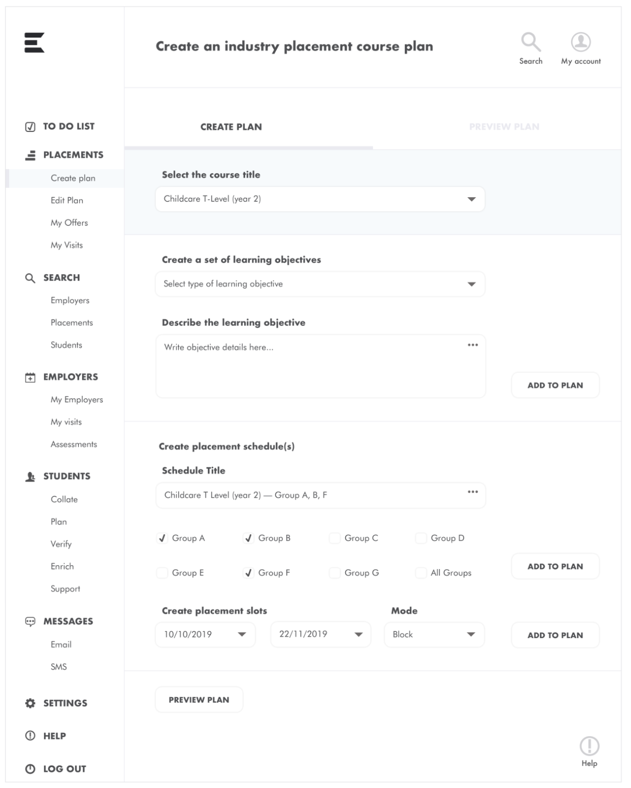

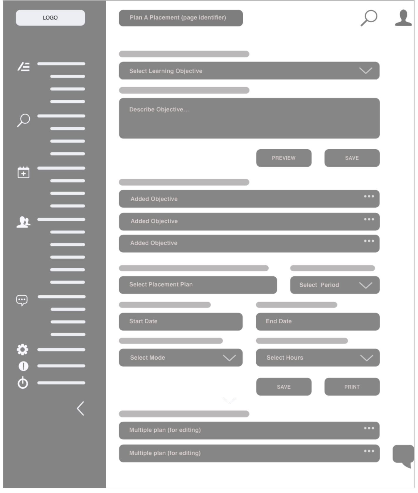

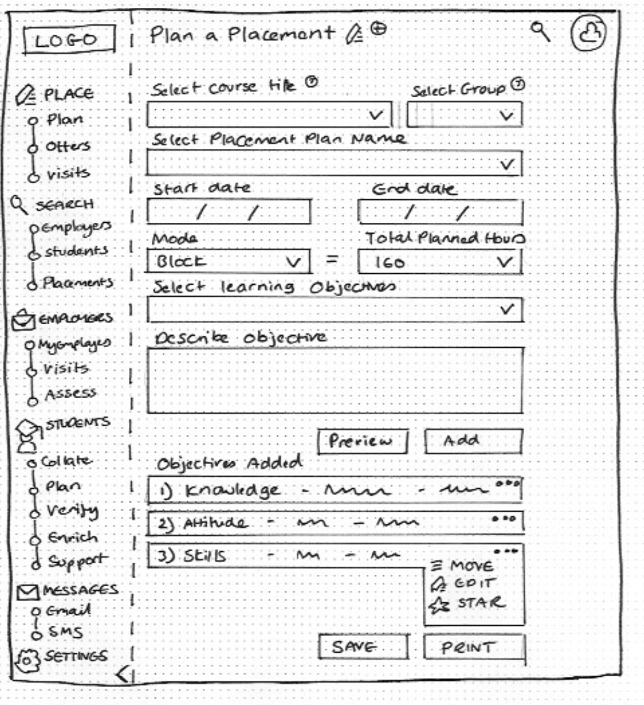
Original annotated mid-fidelity PDFs: placement planning · placement offers
The notes document intended interactions, not evidence that each proposed feature was tested or implemented. Select an image to enlarge it without leaving the page.
The design decision
Design the connections, not just the screens. Mapping the journey first gave the subsequent sketches and detailed UI a shared structure across related placement tasks.
04 — From detailed design to development
With the journeys and interaction structure defined, I progressed the experience into responsive interface designs across desktop, tablet and mobile. The aim was to establish a coherent visual and interaction foundation that engineering could take forward.
The final design direction
The desktop experience brought the product structure together. The tablet and mobile views show how the same design direction was adapted to different screen sizes.


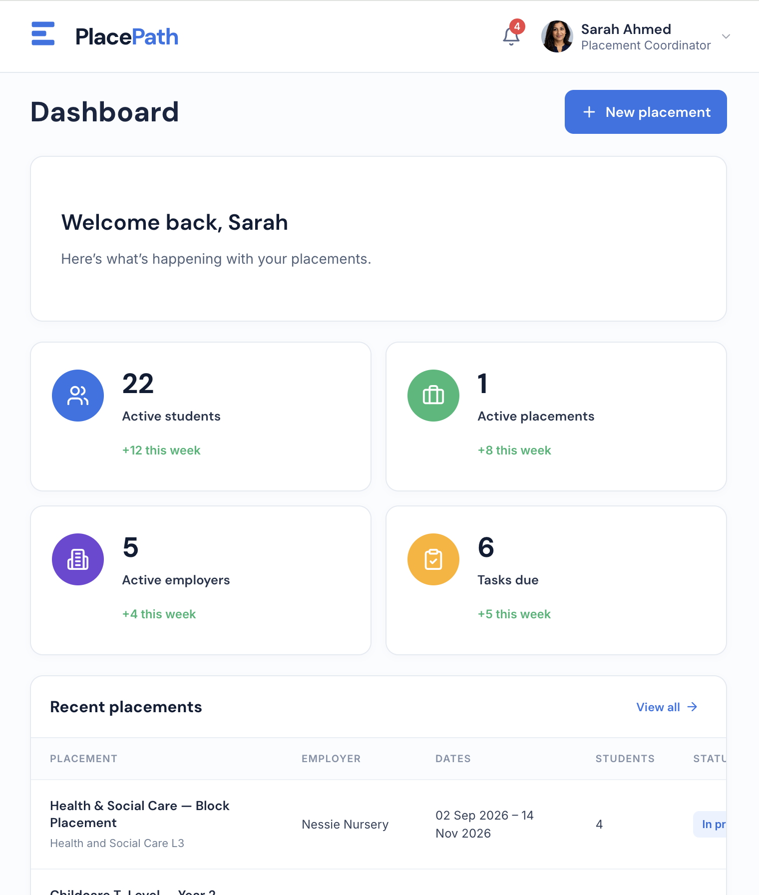

Client feedback
“It looks really good and I do like the ‘PlacePath’ layout and design. It is very easy on the eye and is made to be highly intuitive. Well done”
What I delivered
A foundation for engineering
I delivered the connected journeys, product structure and detailed responsive interfaces for desktop, tablet and mobile. This gave engineering a client-approved design direction and a consistent starting point for development. The handoff represented the proposed product experience, rather than evidence of a completed build.
What happened next
Development started; launch was paused
Development began, but the wider project was subsequently paused before launch. There are therefore no post-launch usage or impact metrics to report.
Scope of this work
Client-approved design and handoff, not a launched product. The independently developed interactive prototype in Section 05 is a later exploration, separate from the commissioned deliverables.
05 — Bringing the experience to life
I later returned to my original designs independently to explore how the proposed experience could work beyond static screens.
Using Figma Make, OpenAI Codex and my own prompts, I generated an interactive prototype from my original designs. I personally reviewed and tested the interactions, then refined the experience through further prompts and design decisions.
This let me explore how the interface, navigation and interactions could work together as a connected product experience.
This prototype is an independent continuation of my original design work and was not part of the commissioned client deliverables.
Independently developed using Figma Make, OpenAI Codex and iterative prompting, based on my original PlacePath designs. Interactions were personally reviewed, tested and refined through further prompts.
Open full-screen prototype (opens in a new tab)06 — Outcomes and reflection
Designing one connected experience for three distinct user groups
My biggest achievement was bringing together the needs of placement teams, employers and students into one cohesive product, while ensuring each group had an experience tailored to their responsibilities.
Starting with 15 high level user stories, I worked with the CEO to define ten essential MVP capabilities before independently designing the product structure, connected journeys and responsive interfaces.
The resulting design direction was approved by the client and handed to engineering, where development began before the wider project was paused.
What I learned
One of the greatest challenges was working with limited access to direct user research while independently making design decisions for three different audiences.
The experience reinforced the importance of establishing a clear product structure, prioritising essential user journeys and recognising where assumptions required further validation.
What I would do differently
With hindsight, I would advocate for greater investment in direct user research, particularly field studies, to observe how placement teams coordinate their work in practice. This could reveal behaviours and challenges that may not emerge through interviews or existing requirements alone.
I would introduce regular peer reviews with another designer or a developer to challenge assumptions and strengthen design decisions.
Finally, I would recommend dedicated product management support to coordinate delivery and stakeholder communication, allowing the CEO to focus more time on strategic decisions.
Looking ahead
Together, these changes would strengthen the evidence behind the design, encourage constructive challenge and create a more effective environment for product development.